Sensores e Integración de Datos
Introducción
Los sensores son componentes electrónicos que permiten a los dispositivos móviles percibir y medir cambios en su entorno físico o interno, transformando magnitudes del mundo real en señales eléctricas o digitales que pueden ser interpretadas por el sistema operativo.
Su integración en los smartphones ha revolucionado la manera en que interactuamos con la tecnología, posibilitando funciones como la navegación por GPS, el reconocimiento biométrico, el seguimiento de la actividad física o la adaptación automática de la interfaz según el contexto.
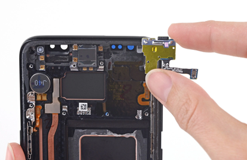
Sensores
Los sensores mejoran la experiencia del usuario en múltiples aspectos:
- Facilitan la ubicación y navegación.
- Habilitan la interacción contextual (ajustes automáticos de brillo, rotación, etc.).
- Permiten la detección de movimiento y gestos.
- Incrementan la seguridad biométrica.
- Contribuyen al bienestar y la monitorización de la salud.
- Optimizan el consumo de energía y los recursos del sistema.
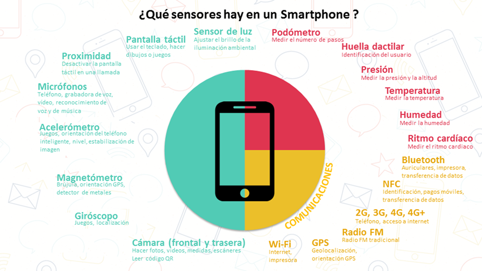
Tipos de Sensores
Tipos y Medidas
Los sensores pueden clasificarse según la magnitud que miden, el tipo de señal que generan o su función dentro del dispositivo.
A continuación, se describen los principales sensores presentes en los dispositivos móviles modernos.
Sensor de luz
Mide la intensidad luminosa del entorno.
- Magnitud: intensidad luminosa.
- Unidad: lux.
Permite ajustar automáticamente el brillo de la pantalla y optimizar el consumo energético.
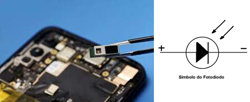
Sensores de luz
Proceso
Elemento sensible: fotodiodo expuesto a luz
- Generación de corriente
- Condiciones de operación
- Acondicionamiento de la señal
- Conversión analógico-digital
- Procesamiento digital
Sensores de pantalla táctil
Permiten detectar la interacción del usuario con la pantalla mediante distintos principios físicos:
-
Capacitivo: mide variaciones de capacitancia al tocar la superficie.
- Magnitud: Capacitancia
- Unidad: Coordenadas X e Y
-
Resistivo: detecta cambios en la resistencia eléctrica.
- Magnitud: Resistencia eléctrica en el punto de contacto
- Unidad: Ohmios
-
Infrarrojo: identifica interrupciones en haces de luz infrarroja.
- Magnitud: Interrupción de los rayos infrarrojos
- Unidad: Coordenadas X e Y medidas en píxeles
-
Óptico: emplea cámaras y sensores ópticos para detectar la posición del toque.
- Magnitud: Imágenes y patrones ópticos
- Unidad: Coordenadas X e Y medidas en píxeles
Todos convierten la señal analógica en coordenadas digitales X e Y que el sistema operativo interpreta.
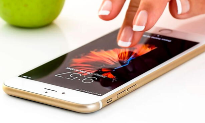
Sensores de pantalla táctil
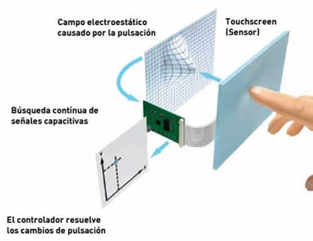
Sensores de pantalla táctil capacitivos
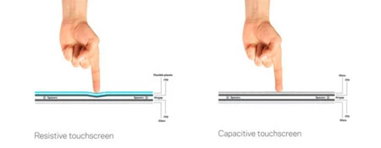
Sensores de pantalla táctil resistivos
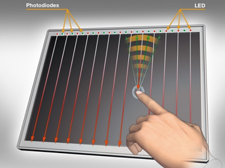
Sensores de pantalla táctil infrarrojo
Sensores de pantalla táctil ópticos
Código - Manejo de eventos táctiles
Proceso
Elemento sensible: detección de cambios
- Mapeo de coordenadas
- Conversión analógico-digital
- Interpolación y calibración
- Actualización continua
- Transmisión al Sistema Operativo
Sensor de proximidad
Mide la distancia entre el dispositivo y un objeto cercano.
- Magnitud: distancia.
- Unidad: centímetros o milímetros.
Se usa, por ejemplo, para apagar la pantalla durante una llamada al acercar el teléfono al oído.
Proceso
Elemento sensible: emisión de luz o ultrasonidos
- Recepción de señales
- Generación de una Señal Analógica
- Acondicionamiento de la señal
- Conversión analógico-digital
- Interpretación en el Sistema Operativo
- Acciones asociadas
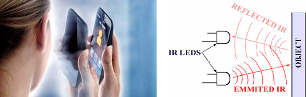
Sensores de proximidad
Micrófono
Convierte las ondas de sonido en señales eléctricas.
- Magnitud: presión acústica.
- Unidad: pascal (Pa).
Su procesamiento digital permite grabar, transmitir o interpretar voz y sonidos del entorno.
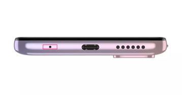
Micrófono
Código - Lectura del micrófono
Proceso
Elemento sensible: sonido
- Transducción de sonido a señal eléctrica
- Amplificación y acondicionamiento de la señal
- Conversión analógico-digital
- Muestreo y cuantificación
- Creación de una representación digital
- Almacenamiento o transmisión
- Procesamiento digital
Acelerómetro
Mide la aceleración del dispositivo en los tres ejes espaciales.
- Unidad: metros por segundo al cuadrado (m/s²) o “g” (9.8 m/s²).
Es esencial para detectar orientación, pasos o movimientos bruscos.
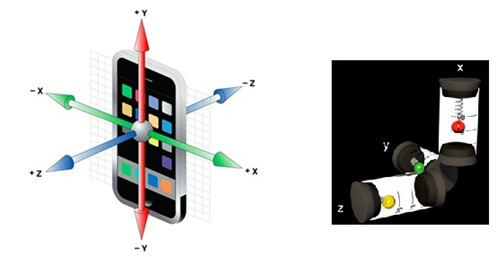
Representación de un acelerómetro triaxial - Representación de un acelerómetro basado en masas y resortes
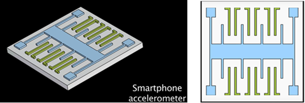
Estructura MEMS de un acelerómetro - Vista esquemática superior MEMS
Proceso
Elemento sensible: aceleración
- Transducción de la aceleración a señal eléctrica
- Amplificación y filtrado
- Conversión analógico-digital
- Creación de una representación digital
- Almacenamiento o transmisión
- Procesamiento digital
Magnetómetro
Mide la intensidad del campo magnético.
- Unidad: microtesla (µT).
Permite determinar la orientación del dispositivo y sirve de base para las brújulas digitales.
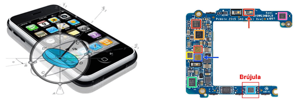
Magnetrómetro
Proceso
Elemento sensible: Semiconductor donde aparece el voltaje Hall, el campo magnético atraviesa ese semiconductor
- Transducción de campo magnético a señal eléctrica
- Amplificación y filtrado
- Conversión analógico-digital
- Representación digital
- Almacenamiento y transmisión
- Interpretación y uso
Giroscopio
Mide la velocidad angular del dispositivo.
- Unidad: grados por segundo (°/s) o radianes por segundo (rad/s).
Permite registrar giros, rotaciones y mejorar la precisión del movimiento.
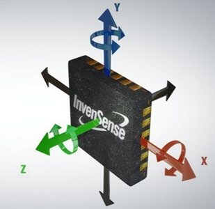
Giroscopio
Proceso
Elemento sensible: La masa vibratoria MEMS (proof mass) sometida a la fuerza de Coriolis.
- Transducción
- Acondicionamiento de la señal
- Conversión analógico-digital
- Procesamiento digital
Cámaras
Capturan la luz incidente mediante sensores de imagen.
- Magnitud: luz visible.
- Unidad: lux.
Transforman la información óptica en señales digitales que conforman imágenes o vídeo.
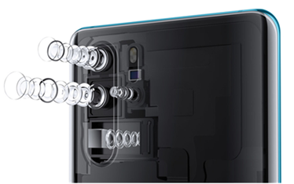
Cámaras
Proceso
Elemento sensible: Luz capturada por el sensor.
- Conversión de luz en carga eléctrica
- Lectura de carga por filas y columnas
- Amplificación y acondicionamiento
- Conversión analógico-digital
- Creación de una imagen digital
- Procesamiento digital
Podómetro
Basado en el acelerómetro, mide la frecuencia de los movimientos de caminar o correr.
Se utiliza para contar pasos, estimar distancias y calcular gasto calórico.
Unidad: metros por segundo al cuadrado (m/s²) o en términos de la gravedad terrestre (g), donde 1 g es aproximadamente igual a 9.8 m/s².
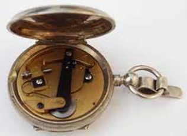
Podómetro
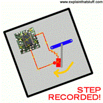
Podómetro
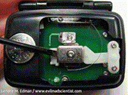
Podómetro
Proceso
Elemento sensible: La masa inercial del acelerómetro MEMS.
- Detección del movimiento
- Filtrado y procesamiento de datos
- Conteo de pasos
- Integración temporal
- Conversión a datos digitales
- Interfaz de usuario
Sensor de huella dactilar
Captura la topografía de la huella mediante tecnologías ópticas, capacitivas o por ultrasonido.
Permite la autenticación biométrica segura del usuario.
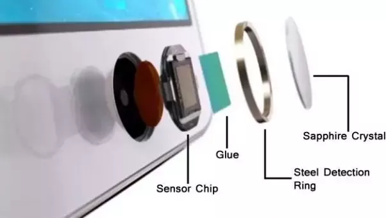
Huella Dactilar
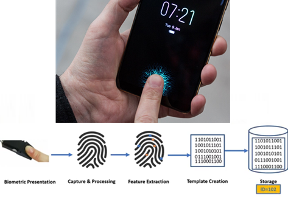
Huella Dactilar
Proceso
Elemento sensible: Captura de la huella dactilar
- Creación de una plantilla
- Extracción de características
- Codificación digital
- Almacenamiento y comparación
- Algoritmos de coincidencia
- Aceptación o rechazo
Barómetro
Mide la presión atmosférica.
- Unidad: atmósfera o hectopascales (hPa).
Ayuda a estimar la altitud y a mejorar la precisión de los datos de localización GPS.
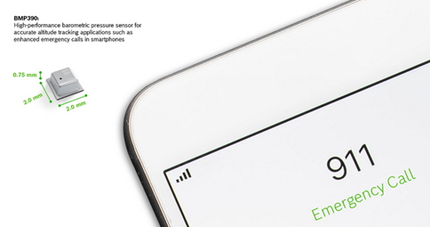
Barómetro
Proceso
Elemento sensible: Membrana delgada que se deforma -captura de la presión-
- Compensación de la presión
- Conversión analógico-digital
- Muestreo y almacenamiento
- Cálculo de la altitud
- Presentación de datos
Termómetro
Mide la temperatura del ambiente o del dispositivo.
- Unidad: grados Celsius (°C) o Fahrenheit (°F).
Es útil para la gestión térmica del sistema y para aplicaciones ambientales.
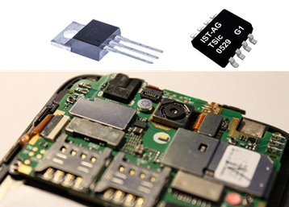
Termómetro
Proceso
Elemento sensible: Captura de la temperatura
- Conversión analógico-digital
- Muestreo y almacenamiento
- Presentación de datos
Sensor de humedad
Mide la humedad relativa del aire.
- Unidad: porcentaje (% RH).
Ayuda a registrar las condiciones ambientales y puede integrarse con sensores de temperatura.
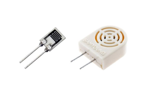
Sensores de Humedad
Proceso
Elemento sensible: Modificación de material higroscópico
- Medida del efecto de la humedad sobre el material
- Conversión analógico-digital
- Almacenamiento y presentación
Ritmo cardíaco
Utiliza sensores ópticos basados en fotopletismografía (PPG) para detectar cambios en el flujo sanguíneo.
-Magnitud: frecuencia cardíaca
- Unidad: latidos por minuto (bpm).
Se emplea en relojes inteligentes y dispositivos de monitorización de salud.
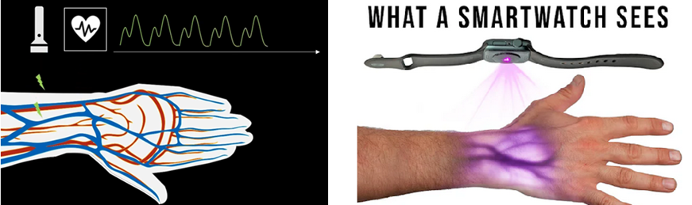
Ritmo Cardíaco
Proceso
Elemento sensible: Emisión de luz
- Absorción de luz por la sangre
- Detección y conversión a señal eléctrica
- Procesamiento de la señal
- Cálculo de la frecuencia cardíaca
- Presentación de datos
Integración y Comunicación de Sensores
Conectividad y protocolos
Los sensores no solo recopilan datos locales; también se comunican con otros dispositivos y redes mediante diferentes tecnologías:
- Bluetooth: permite la conexión inalámbrica de bajo consumo entre sensores y dispositivos cercanos.
- NFC (Near Field Communication): comunicación bidireccional de corto alcance para pagos, identificación o intercambio de información.
- Wi-Fi: conexión a redes locales y a Internet, usada para sincronizar datos y acceder a servicios en la nube.
- Radio FM: permite la recepción de señales de audio en tiempo real mediante un sintonizador interno.
- GPS: determina la ubicación del dispositivo mediante señales satelitales y cálculos de trilateración.
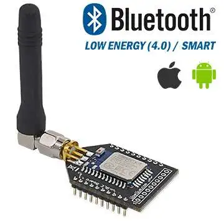
Bluetooth
NFC
Wifi
Radio FM
Fusión e integración de datos
La fusión de sensores combina información de múltiples fuentes (como acelerómetro, giroscopio y magnetómetro) para ofrecer datos más precisos y contextuales.
Este proceso implica:
- Procesamiento conjunto de señales.
- Sincronización temporal de las lecturas.
- Calibración cruzada para reducir errores.
- Integración mediante APIs y bibliotecas del sistema operativo (como SensorManager en Android).
Patrones de desarrollo
El uso eficiente de sensores en aplicaciones móviles requiere buenas prácticas de programación:
- Gestión de eventos mediante callbacks u observadores.
- Optimización del consumo energético desactivando sensores cuando no son necesarios.
- Manejo de errores y excepciones en la lectura de datos.
- Integración segura con otras funciones de la app.
- Protección de la privacidad del usuario, asegurando la gestión ética de los datos obtenidos.
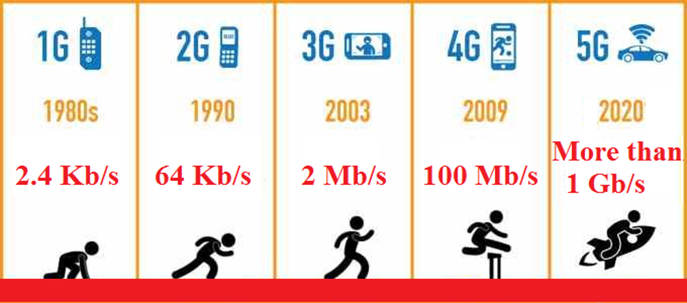
Evolución de las redes móviles
Retos Éticos
El uso de sensores plantea cuestiones éticas y legales relacionadas con la privacidad y la seguridad de los datos.
Los principales retos son:
- Privacidad: recopilación de información personal sin consentimiento explícito.
- Seguridad: exposición de datos sensibles a accesos no autorizados.
- Sesgos y discriminación: interpretación inadecuada de datos biométricos o de salud.
- Transparencia: necesidad de explicar cómo se usan los datos y con qué fines.
- Impacto ambiental: consumo energético y desecho de componentes electrónicos.
- Accesibilidad: garantizar que los beneficios de la tecnología sean universales.
- Responsabilidad: definir quién responde ante fallos o mal uso de los datos.
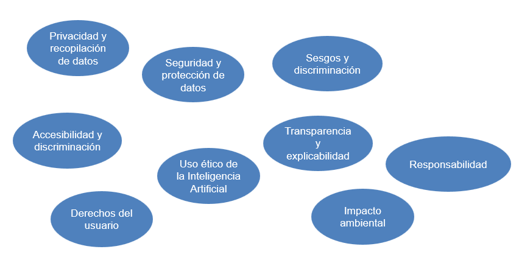
Retos éticos
Tendencias Futuras
La evolución tecnológica apunta a sensores más inteligentes, precisos y sostenibles, integrados de forma natural en el entorno y en la vida cotidiana.
Entre las principales tendencias se encuentran:
- Sensores especializados y de alta precisión para aplicaciones médicas y científicas.
- Monitorización de salud y bienestar mediante wearables.
- Integración con realidad aumentada y virtual (RA/RV) para experiencias inmersivas.
- Fusión sensorial para generar información contextual avanzada.
- Aplicación de inteligencia artificial para procesar e interpretar datos en tiempo real.
- Interacción sin contacto (por gestos, voz o proximidad).
- Sensores de bajo consumo energético y autoalimentados mediante energía renovable.
- Tecnologías sostenibles para reducir el impacto ambiental.
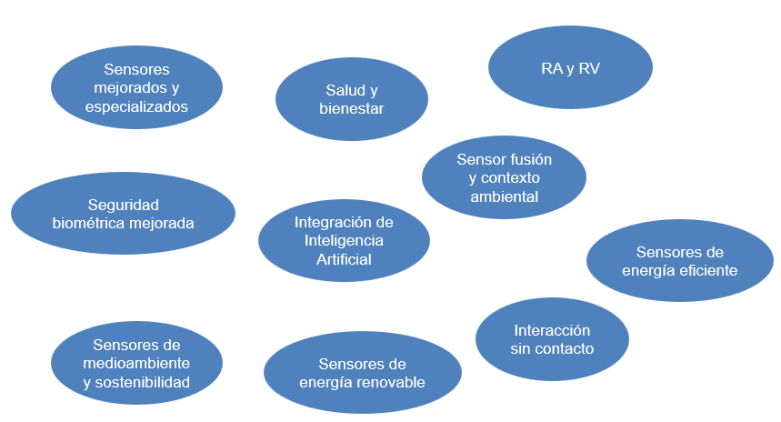
Tendencias Futuras
Conclusiones
Los sensores son el puente entre el mundo físico y el digital en las aplicaciones móviles nativas.
Su capacidad para percibir, interpretar e integrar datos hace posible una interacción más natural, segura y personalizada con los dispositivos.
El futuro de la computación móvil dependerá en gran medida de cómo gestionemos e interpretemos la enorme cantidad de información generada por estos sensores, garantizando siempre un equilibrio entre innovación, eficiencia y ética tecnológica.